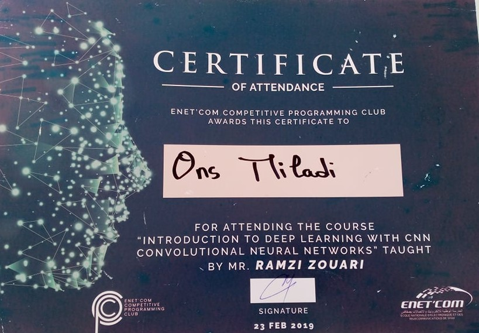

Mes certifications


Je suis passionné par le développement web et les systèmes embarqués.
En effet ,j'ai obtenu mon diplome d'ingénierie en informatique industrielle
de l'école nationale d'électronique et télecommunications de sfax.
Au cours de ma formation j'ai réalisé trois stages dans le domaine de développement web .De plus, ma formation m'a permis d'enrechir mes compétences dans le
domaine des systémes embraqués et l'intelligence artificielle.
Description: cette application permette au client de créer des enquêtes facilement , collecter et analyser les réponses automatiquement .Ainsi elle donne la main au utilisateur de partager le formulaire ou l’imprimer.
Technologies utilisés:
.NET MVC 5 , SQL SERVER 2016 , HTML5 , CSS3 , BOOTSTRAP JAVASCRIPT , JQUERY , STAR UML
Description: cette application présente les images de tunisie en différentes catégories. L’utilisateur peut mettre l’image en fond d’écran.
Technologies utilisés:
FLUTTER , DART , FIREBASE , UI , UX
Descirption: cette application permette au Utilisateur de gérer les factures de chaque employé .
Technologies utilisés:Laravel , php , Phpmyadmin,
,html,css , bootstrap , StarUML
Description:ce site presente les services d’une societé et permet au client de contacter l’administration
Technologies utilisés:
.NET MVC 5 , SQL SERVER 2016 , HTML5 , CSS3 , BOOTSTRAP JAVASCRIPT
Description:La conception, la réalisation et la commande floue d’un robot mobile.
Technologies utilisés: Labview,logique floue(fuzzy logic)
Description :ce site permette au Utilisateur de télecharger et déposer des documents.
Technologies utilisés:
Php,phpmyadmin,html,css,javascript